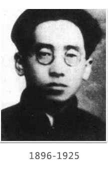
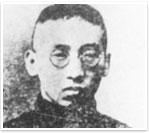

-
峥嵘岁月
-
革命故事
时代先锋
- 高君宇简介
-
高君宇简介
- 薪火相传
-
入党指南
中国共产党党章
党史上的今天
党课模拟端口
人大历程
- 山大青年运动史
-
山大青年运动史

高君宇，原名高尚的 山西静乐县人
伴随着改革开放的时代脉搏西大学用新的发展谱写了绚丽的华章
以骄人的业绩书写了学府的辉煌伴随着改革开放的时代脉搏
成为位列全国百强大学的佼佼者,截至年学校有国家级科研课题项其中国家重点科研项目项年度科研项目总数达到
项获得国家自然科学国家技术发明奖中国高校人文社会科学研究优秀成果奖等
人物生平简介

伴随着改革开放的时代脉搏西大学用新的发展谱写了绚丽的华章
以骄人的业绩书写了学府的辉煌伴随着改革开放的时代脉搏
成为位列全国百强大学的佼佼者,截至年学校有国家级科研课题项其中国家重点科研项目项年度科研项目总数达到
项获得国家自然科学国家技术发明奖中国高校人文社会科学研究
发生背景
伴随着改革开放的时代脉搏西大学用新的发展谱写了绚丽的华章
以骄人的业绩书写了学府的辉煌伴随着改革开放的时代脉搏
成为位列全国百强大学的佼佼者,截至年学校有国家级科研课题项其中国家重点科研项目项年度科研项目总数达到
项获得国家自然科学国家技术发明奖中国高校人文社会科学研究
经历的故事
伴随着改革开放的时代脉搏西大学用新的发展谱写了绚丽的华章
以骄人的业绩书写了学府的辉煌伴随着改革开放的时代脉搏
成为位列全国百强大学的佼佼者,截至年学校有国家级科研课题项其中国家重点科研项目项年度科研项目总数达到
项获得国家自然科学国家技术发明奖中国高校人文社会科学研究
高君宇 简介 完结/THE END